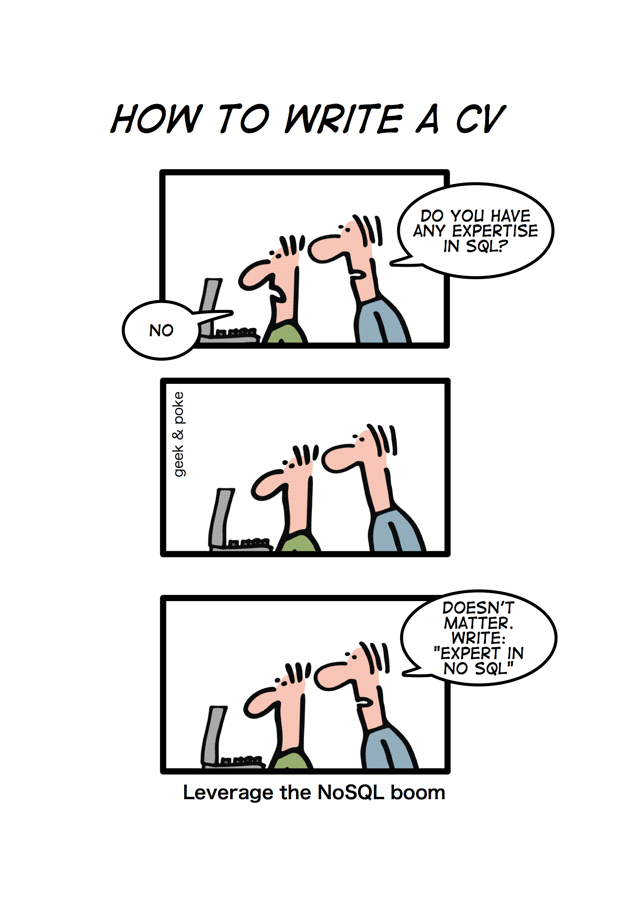

Uladzimir Mihura
November 1, 2012

There are no new database designs.
There are only new implementations and combinations.
A database storing application-friendly formatted objects, each containing collections of attributes which can be searched through a document ID, or the creation of ad-hoc indexes as needed by the application